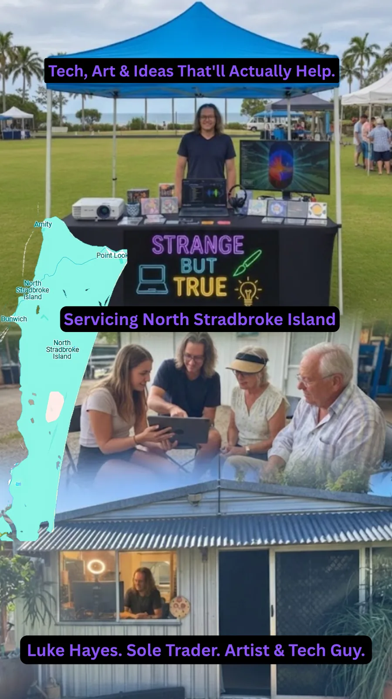

Planned Market Stall
A visible, friendly place for questions, music, writing and useful conversations.
The stall is planned as a low-pressure way to meet, ask, browse and get a feel for what Strange but True can help with. I have the equipment needed, but I have not hosted a stall yet.

What the stall could offer
- Ask about tech, AI, forms and device help
- Browse creative products, music previews and download samples
- Talk through event, projection or outdoor cinema ideas
- Pick up a card, flyer or QR code for later
An example digital noticeboard
I have an ex-government PC and two monitors for an example digital noticeboard. The noticeboard system is still being developed.
For now, contact me to talk about tech help, music or a project. The market stall has not yet been hosted, and the noticeboard system remains in development.